TUTORIAL WITH EXAMPLE on HOW TO MERGE
2 TGA FILES INTO 1 TGA & MODIFY THE .MOD FILE
NOTE
In this example the final modified tga file generated by the file.exe is named barrel.tga
NOTE: Only use 8 digits MAXIMUM for any tga file.
1 - First put the mod file with the 2 tgas you want to modify in the same folder as the tile.exe program.
Now , in this example , the two 256x256 files are resized in advance,otherwise resize your 2 images to 256x128 in your paint program , then import the mod into Zmodeler and split the model as shown with the depressed buttons
on the right of the pic below.
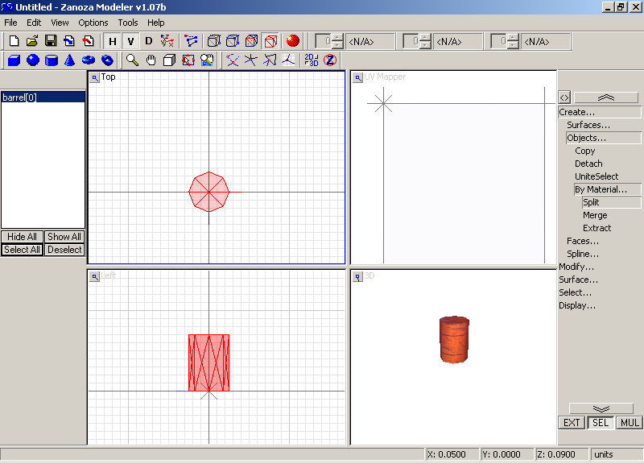
2 - Click the "select all" button in the "objects box",click mouse in any box,then
Rename this:
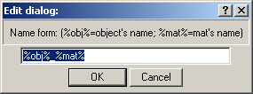
To this,then click ok button.
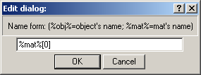
3 - Now right click on each file in the objects box and rename them from this:
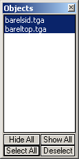
To This:
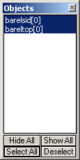
4 - Then as shown below click "File",hover over "Multiple Files Export",click the "Export..." button.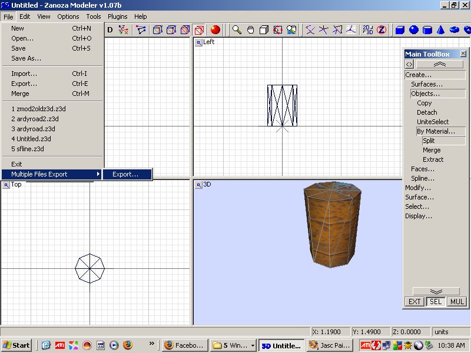
5 - Now as shown below click the dropdown box,choose "Viper Racing MOD",click the "Select all shown" button then click the "Go Export" button.
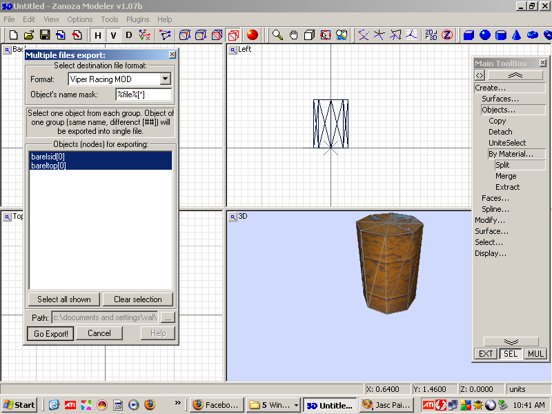
6 - Exit Zmodeler and go to your folder where you exported the mods to,which is the same folder as the original mod and tgas.
7 - Fire up the tile.exe now:
Change the Output name to the name of file barrel for this example.
Open and insert one by one, notice the position of left most and top most X and Y.
Change manually if it doesn't fit.
Make sure the tga file is uncompressed 32 bit top left inverted.
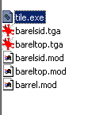
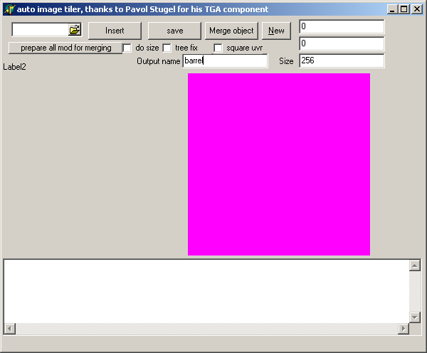
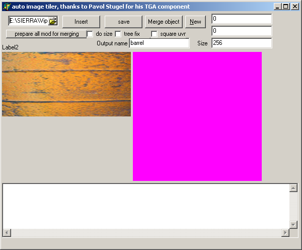
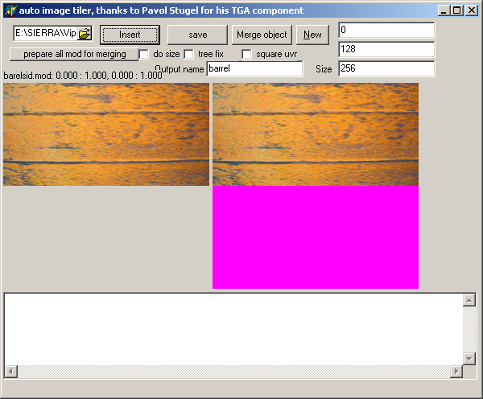
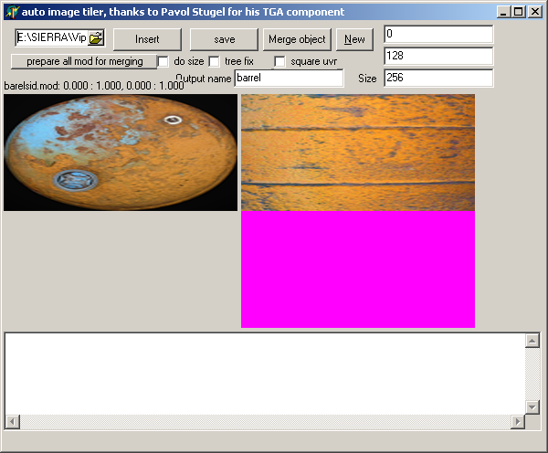
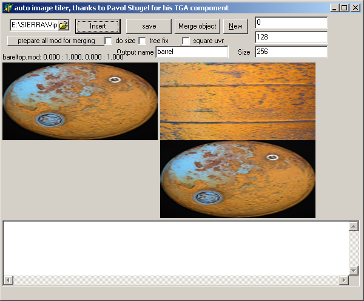
8 - Press "save" button first,then press the "merge" button to save the image and merge the combined mod file.
The merge function will combine all the files that you open.
If you open it twice it will do it twice.
Now your "barrel.mod" will only have the one "barrel.tga" for a texture.
9 - Convert the "barrel.tga" file to a barrel.tex file and you are done.
10 - FINAL NOTE
If you so desire at this point you can rename the barrel.mod to anything you want,or you can change the name of the barrel.tga
file,8 digits maximum,to whatever and change the name inside the barrel.mod file with a hex editor to match the tga.
This number 10 step is NOT neccessary.
End of tutorial.